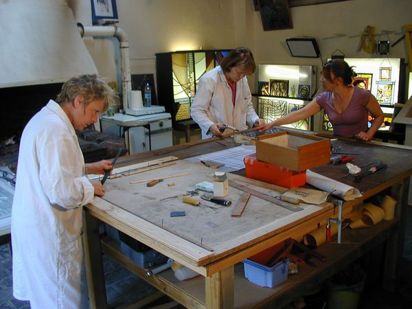

Compagnon du vitrail, la somme en lumière: Fondé par 3 amies en 1986 dans la tradition des artisans créateurs verriers . Situé à deux pas de la cathédrale d'Amiens, elle perpétue l’art millénaire du vitrail grâce à son savoir-faire et à sa créativité. Passionnées par le verre, sa transparence et ses couleurs, mais aussi par les multiples façons de lui donner vie et de le mettre en scène. Elles expérimentent les différentes manières de faire évoluer cet art dans les sphères du design contemporain.

Depuis près de 35 ans, Marie, Lucille et Pierrette mettent leur amour du travail du verre à votre
disposition pour les plus belles créations de vitraux. Elles se sont rencontrées lors de leurs études à
l'École Nationale Supérieure des Arts Appliqués et Métiers d’Arts Olivier de Serres, où elles y ont
suivi une formation artistique pluridisciplinaire de 4 ans. S’en est suivi, une formation en vitrail
avec l'obtention du diplôme supérieur d’Arts Appliqués Plasticien section Vitrail. D’une franche amitié
et réelle complicité est né “compagnon du travail”.